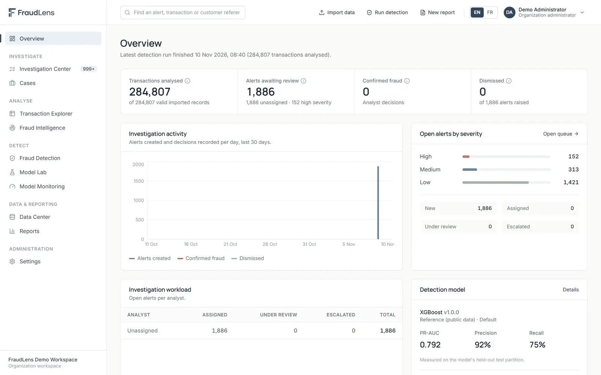

FraudLens
A multi-organization platform that turns transaction files into prioritized, explained fraud alerts and gives analysts a structured place to investigate them.

Screenshots show the running application with a demonstration workspace built from a public dataset.
The problem
Fraud teams receive transaction data in many layouts, from many systems. Models are often applied to data they were never trained on, alerts arrive without explanations, and the line between a model's score and an analyst's confirmed finding gets blurred in reporting.
FraudLens is built on three principles: check the data before scoring it, explain every alert, and keep model signals separate from analyst decisions.
Objectives
- Let any organization bring its own transaction data, whatever its column layout, without losing or silently altering records.
- Prevent detection models from being applied to data they cannot legitimately score.
- Focus analysts' time on the alerts that matter most, with the reasons behind each one.
- Keep a complete, tamper-resistant record of who decided what, and why.
How it works
- Onboard
- Import & map
- Validate
- Check compatibility
- Detect
- Investigate & decide
- Report & monitor
- Data import and validationCSV files of any layout; column meanings suggested and confirmed by the user; invalid records set aside with their reason, never deleted.
- Model compatibility checksBefore scoring, the platform checks that the data has every input a model needs and resembles its training data.
- DetectionApproved models and configurable business rules score each transaction and produce prioritized alerts.
- InvestigationAlert queue, SHAP explanations, cases, mandatory written reasoning for decisions and senior validation.
- Model Lab and monitoringModel registry and approval, precision–recall and ROC curves, threshold analysis, model cards and drift indicators.
- GovernanceDated PDF/CSV reports in English or French and an append-only audit history.
Models and evaluation
Reference models were trained on the public Credit Card Fraud Detection dataset (284,807 transactions, 492 frauds) with a temporal split. Hyper-parameters, class-imbalance treatment and the alert threshold were chosen on a validation partition; the test partition was used once.
| Model | PR-AUC | Precision | Recall |
|---|---|---|---|
| Random Forest | 0.811 | 90.3% | 74.7% |
| XGBoost | 0.792 | 91.8% | 74.7% |
| LightGBM | 0.748 | 94.4% | 68.0% |
| Logistic Regression | 0.747 | 96.1% | 65.3% |
| Isolation Forest (unsupervised) | 0.054 | 8.9% | 46.7% |
Test partition: 56,962 transactions, 75 frauds. Precision, recall and PR-AUC are reported instead of accuracy because fraud is about 0.17% of transactions.
My contribution
I designed and developed FraudLens end to end: the data import and validation pipeline, model training and evaluation on imbalanced data, SHAP explanations, the FastAPI backend and PostgreSQL schema, and the bilingual React interface.
The source code is private. The public GitHub repository presents the product, its architecture, its database design and screenshots.
Screenshots
Technologies
- Python
- pandas
- NumPy
- scikit-learn
- XGBoost
- LightGBM
- imbalanced-learn
- SHAP
- FastAPI
- Pydantic
- SQLAlchemy
- Alembic
- PostgreSQL
- React
- TypeScript
- Vite
- Tailwind CSS
- Recharts
- i18next
- ReportLab